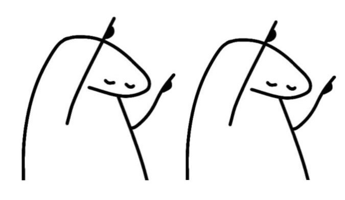

Oleh: Ully Vera Astarita
Diriku ada kebiasaan menempatkan seseorang dalam sebuah lagu. Asik pikirku, karena bahkan aku bisa dibuat salah tingkah saat mendengarkan sekaligus memvisualisasikannya. Di balik nadanya yang memikat, tersimpan pula lirik yang mampu membentangkan kupu-kupu di perutku. Sangat menyukainya.
“Nuna, aku penasaran lagu apa yang cocok dengan seorang pria yang ingin kamu jadikan sebagai pasanganmu. Apakah ada?”
Seseorang yang sesuai dengan lagu One Direction – “Perfect” cinta yang apa adanya, dengan menikmati tiap titik kesempatan tanpa tekanan dan tanpa janji-janji muluk, yang hanya dimiliki oleh dua manusia yang senang bersama, meskipun tak terlalu ideal.
Kusumbat telingaku dengan earphone dan kupikirkan dia dengan sengaja. Perasaanku merasuk luas membayangkan seseorang; seseorang yang kukenal dalam pikiran, yang ingin menjadikannya sebagai kekasih diriku.
Aku tertawa kecil. Jika dipikirkan lagi, ini lebih seperti diriku yang melantur karena jatuh cinta. Namun, nyatanya aku memandang romantisme secara realistis.
Kutapaki jalanan bersama angin yang membawa dingin, angin yang hinggap di kulit ari dan mengisi kekosongan pori-pori. Namun, ketenanganku terusik karena seseorang. Pemuda itu tiba-tiba menarik rambutku sebagai bentuk sapaan, katanya.
Ya, akhirnya kami berlari saling mengejar satu sama lain. Tidak ada yang ingin mengalah sampai dibuat merah wajahku karena lelah. Ia masih bersemangat, walau deru napasnya lebih berat, sementara aku mendudukkan diri seraya menatapnya sinis.
“Baiklah, aku saja yang mengalah. Benar-benar tak pernah ada kebaikan jika bertemu denganmu. Ukhh... kamu bergembiralah, karena sepertinya aku akan berjalan dengan pantat untuk sampai ke rumah.”
Dia mendekat dengan wajah yang masih tertawa puas, lalu duduk di sebelahku. Tangannya mengusap pergelangan tanganku, membuatku menggerutu dengan putus asa. “Kaki... sakitku di bagian pergelangan kaki, bukan pergelangan tangan.”
Kuberikan senyum tipisku ketika memandangnya. “Senang sekali ya bisa bermain-main?” Ia cekikikan.
“Kemari, letakkan kakimu di atas pahaku. Akan kuberikan pijatan paling baik di seluruh dunia ini.”
And I might never be the one who brings you flowers
Akan kukatakan bahwa dirinya bertingkah, tapi ia juga memiliki batasan dalam melakukannya. Perhatiannya yang tepat waktu, meskipun aku hanya sekadar memandangnya sekilas, selalu berhasil membuatku merasa senang dan terjerumus parah. Benar-benar menarik.
Hari ini pun kami berjalan bersama. Aku berjalan di depan, sementara dia berada di belakangku. Aku suka menuduhnya mengikutiku hanya untuk membuatnya kesal, padahal memang ini arah jalan pulang ke rumahnya. Namun, setelah itu, justru tuduhan itu berbalik arah kepadaku.
Itu bukan tuduhan.
Jalan pulangku memutar, dan akan semakin jauh jika melewati jalan ini. Maaf... terlalu menyukainya, jadi tuduhannya benar. Sedikit membuang waktu pun aku tak akan merasa sia-sia jika bisa bertemu dengannya, bertemu tanpa mengantongi harapan apa pun.
“Banyak temanku yang menganggap aku orang serius, sehingga muncul kesimpulan tentang aku akan menyukai tipe yang serius. Mmn... aku lebih ingin memiliki seseorang yang memang bisa sehaluan menyamakan abnormalnya diriku,” ujarku menjelaskan pada temanku.
“Kamu akan memukannya, Nuna.” Aku terkekeh dan menggaruk tengkukku yang tak gatal, karena sebenarnya sudah menemukan seseorangnya.
Di malam berbintang, kami mengitari jalanan setapak, ditemani es krim hasil traktirannya setelah kalah taruhan. Aku merasa nyaman; tiap kali membuka suara untuk bercerita, ia akan mendengarkanku dengan baik.
“Hidupmu penuh komedi, Na. Humormu takkan jadi tinggi karenanya, bukan?” Dia yang bertanya.
“Menurutmu, orang yang bisa langsung tertawa setelah melihat tingkah babi itu humornya tinggi?” Ia terbahak-bahak.
But I can be the one, be the one tonight
Jika aku membawa harapan malam ini, kurasa aku akan melihat diriku sendiri terpuruk, terjebak dalam keinginan untuk menghapus batas “teman” yang terpampang begitu nyata.
Rasanya sangat buruk ketika kedekatan kami berlanjut dalam jangka waktu yang lama, sementara aku memendam, membisu, dan tak berniat mengungkapkan demi menuntun diri sendiri agar tak berkeinginan, membiarkan semuanya seperti ini saja.
“Aku sudah ada seseorangnya,” ucapku pada temanku.
“Benarkah? Kemudian?”
Kumainkan jemariku sambil memberikan jawaban, “Hehe, tidak tahu.”
“Tidak ingin mencoba melangkah?”
“Umm, aku tak pernah merasakan ia ingin melakukan pendekatan itu. Dia benar-benar mengganggapku sebagai teman, tak pernah lebih. Karena itu, aku hanya akan tetap dekat dengannya, menyesuaikan diri, dan tanpa harapan.”
Lagi-lagi aku memutar lagu yang sama. Terasa “Perfect”—sempurna dalam ketidaksempurnaan. Kubiarkan melodi itu menggenang lama dalam pendengaranku, dan kubiarkan pemuda itu, bagaikan strip film, bergulir dalam ingatanku; tentang dirinya yang begitu ceria hingga berani datang menyapa hati.
Cause I can be the one you love from time to time
Sampai pada lirik itu, aku tersenyum dalam diam, tak mencoba mengelaknya.
Jalanan baru saja diguyur hujan, menyisakan kelembapan yang menyelimuti udara sekitar, juga aroma tanah basah yang tengah menyemburkan ketenangannya tanpa aba-aba, berniat mengisi tiap sudut dengan kesegaran yang menenangkan.
Kami keluar setelah berteduh di bawah atap gedung. Aku berlari seraya menenteng sepatu, hendak memercikkan air yang menggenang—masih saja menyenangkan. Dia pun menyusul, mendekat di sampingku, tapi malah menginjak kakiku, lalu kabur.
“Orang gila!” pekikku seraya mengejarnya yang sudah berlari terlebih dahulu.
“Hahahhahaa!” Nyatanya, ia tertangkap olehku. Ini aku yang cocok menjadi atlet lari, ataukah dia yang mengalah padaku? Setelah itu, aku terbahak-bahak melihat lengannya merah-merah akibat cubitanku. Puas menjahili, dan bangga terhadap diri sendiri.
“Pfftt, tak mencubitmu lagi. Aku berbaik hati untuk mengajakmu berkeliling. Mari, Tuan.”
“Kamu bergembira karena ingin memamerkan lenganku yang memerah ini pada seluruh orang, bukan?” Dia merajuk, dan aku menahan tawa. Kubawa dirinya berkeliling, lalu berhenti untuk menengok kepadanya, seraya berucap, “Lihatlah.”
Tak jauh dari tempat kami berhenti, aku mendapati seorang penyanyi pria dengan suara merdu yang dianugerahi. Ia memetik senar-senar gitar yang digendongnya, dikelilingi oleh orang-orang yang berdansa mengikuti melodinya. Tak memandang tua maupun muda, kenal maupun tidak, mereka bersenang-senang bersama.
Tak luput juga dari pandanganku adalah anak spesial itu. Wajahnya sumringah menikmati, menciptakan keharuan dalam hati. Setelahnya, wajahku kecut. Pemuda di sampingku membalas dendam dengan mencubit tanganku; semakin aku abai, semakin dia melunjak jika kulihat-lihat.
“Ishh!” Aku memandangnya geram, tapi dia tak berhenti juga untuk mencubit. Hingga akhirnya, ia berlari karena tak ingin mendapatkan balasan. Tentu aku menyusulnya, sambil sesekali menatap sang musisi dan kerumunannya saat berlari, menyisakan selamat tinggal yang tak terucap.
“Bersenang-senang?”
“Iya, tapi...” Kuperlihatkan sepatu yang masih kutenteng ke kedua pupil matanya.
“Kubawakan sambil kita pulang.”
“Terima kasih, Tuan,” ungkapku padanya.
“Segalanya untukmu, Nona.”
Baby, I'm perfect for you
Aku mendahuluinya, berkeliaran menghirup kebebasan. Hatiku riang, dipenuhi dopamin sebagai penyebabnya. Ya, dia sempurna. Selamanya akan selalu seperti itu, karena dialah yang kuletakkan dalam lagu One Direction – “Perfect”. Hanya dirinya.